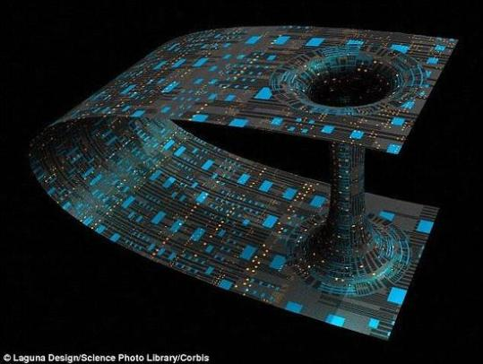
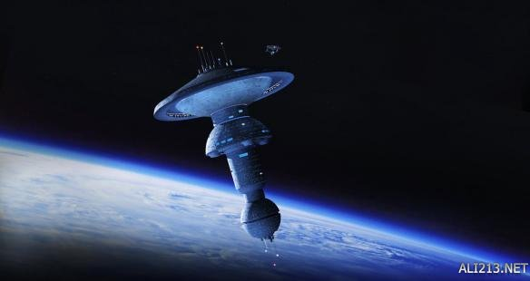
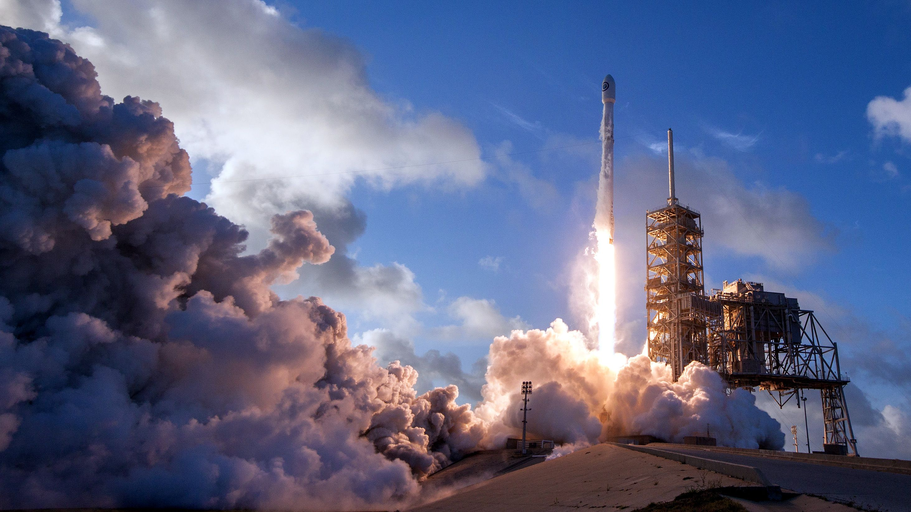
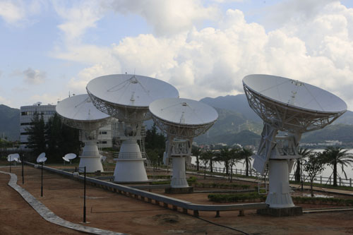

星火 |
天文网 |
web 天文博物馆 |
 |
创建于1996年 |
 空间科学
|
| 空间探测是空间科学研究的基础。空间探测的主要类型包括: |
|  | 1.空间飞行器
指人造地球卫星、月球和行星探测器、空间实验室、航天飞机等的探测。这是空间探测的主要手段，探测的空间范围广、时间长。 |
|  | 2.火箭
探测的机动性强，但由于飞行时间短而受到某些限制。 |
3.气球
比较简便，适宜对平流层、臭氧层的探测，不足之处是探测范围小，探测高度也受到限制。 |
|
|  | 4.地面台站
这是以地面为基地的间接探测方法。具有连续性和稳定性的优点，缺点是受大气层的影响较大。在进入空间时代以后，即以空间飞行器的探测为主。地面探测是辅助性的，但仍是一种必要的探测方法。 |
展望 空间科学在实际应用方面已取得了很大进展，如在通信、导航、测地、气象观测、遥感等方面。在空间环境中，对于研制和生产高质量的单晶、多晶、合金和非晶态材料，以及高精度的电子、光学元件和特殊药品等，将产生巨大的经济效果。现代空间科学技术，已发展到有可能在地球同步轨道的高度建立太阳能卫星发电站，以获得取之不尽、用之不竭的洁净能源。空间的开发和利用已向人类展示了美好的前景。 |
|